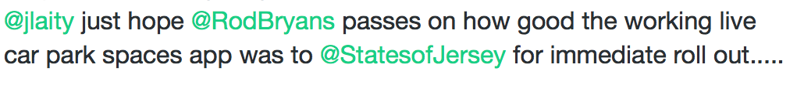
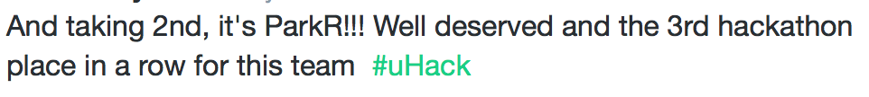
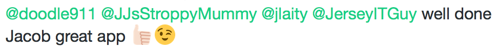
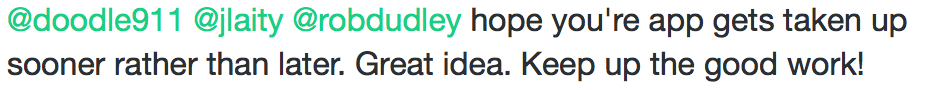

Youth Hackathon 2016

Feedback for ParkR
Post-hackathonThey wrote the App using Apple’s own Xcode, a challenging task for anyone never mind two Year 8 students, all that saw the project were impressed at the audaciousness. Despite many last minute issues that threatened to cripple the project they came through and in less than 24hrs programmed, tested and succeeded in their goal. They have decided to continue with the project and recently added the Apple Watch App to the project with much pride felt when the Watch said Minden was full and their sign concurred. I think there are a great many of us who hope that this useful App will see the light of day, with the determination already shown by these two it’s more than likely that it will. read the full article here.
"Infuriating for drivers, it's enough to send anyone into steering wheel-thumping road rage. But not anymore - and all thanks to a pair of 12-year-olds, who have created their own app which tells motorists the occupancy levels of car parks in Jersey. It’s such a “phenomenal” idea, the States have given it their thumbs up and it will be available to use for all motorists. The car parking app was developed at the second all-night uHack Jersey, youth Hackathon" Baliwick Express, read the full article here.
   -
PREVIOUS POST

uHack Blog
7 and 8 of October 2016